Patrones de arquitectura de sistemas
Introducción
Los patrones arquitectónicos de diseño, son las representaciones esquemáticas de cuales son los componentes fundamentales que componen un sistema y como interactuan entre sí.
Prescinde de detalles y muestra la misión del sistema en el contexto.
Ventajas del diseño arquitectónico
Importancia de los requisitos no funcionales
Los requisitos no funcionales son requisitos que especifican criterios que pueden usarse para evaluar la operación de un sistema en lugar de sus comportamientos específicos.
Rendimiento: nivel de aprovechamiento de los recursos.
- Definir la distribución adecuada de los procesos, mejor concentrar procesos críticos en máquinas potentes.
- Evitar retardos adicionales en las comunicaciones.
Seguridad: protección ante intrusiones externas.
- Diseñar arquitecturas de capas con niveles de seguridad.
- Agrupar recursos críticos para su protección en un lugar concreto.
Protección: Evitar o recuperarse de fallos.
- Concentración de operaciones complejas en lugares específicos.
- Mecanismos de redundancia (copias de seguridad).
Disponibilidad: la fracción de tiempo que el sistema esta activo.
Esta relacionado con la protección y la seguridad.
- Mecanismos de redundancia (si uno falla entra el otro).
- Facilitar las tareas de mantenimiento o actualización.
Mantenibilidad: Facilidad de mantener o evolucionar.
- Usar componentes de granularidad pequeña y sustituibles.
- Separación entre productores y consumidores de datos.
- Sistemas con bajo acoplamiento.
Patrones arquitectónicos generales
Son maneras de “representar, compartir y reutilizar conocimiento sobre sistemas software”.
- Soluciones utilizadas en desarrollos anteriores.
- Incluyen recomendaciones de aplicación, fortalezas y debilidades
Arquitecturas cliente-servidor
Lógica distribuida entre dos tipos de máquina (cliente y servidor) conectadas por algún middleware (red de comunicaciones internas entre el sistema central y las aplicaciones distribuidas).
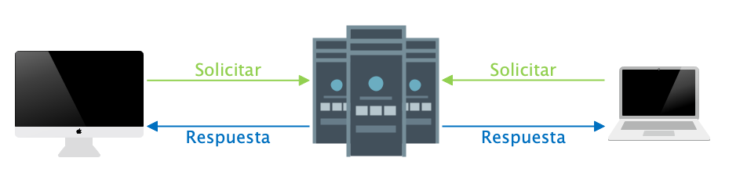
Ejemplo: La imagen muestra un ejemplo de un museo virtual como sistema multiusuario, donde además se aprecia que los distintos servidores a los que acceden los clientes se comportan a su vez como clientes frente a sus respectivos repositorios de datos, definiéndose un modelo de dos capas en cada uno de los servidores.
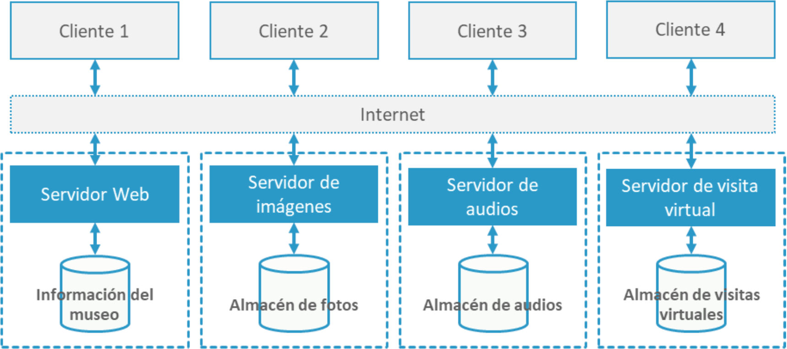
En función de cómo esté distribuida la lógica entre el cliente y el servidor, podemos encontrar diferentes casos:
Cliente ligero
Son aplicaciones donde la lógica esta mayormente en el servidor y la parte del cliente se suele reducir principalmente a la capa de presentación de la información.
| 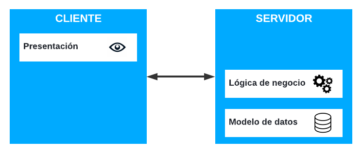 |  |
|---|---|
| Sistema de presentación remota (cliente ligero) Ejemplo: Telnet | Sistema de presentación distribuida (cliente ligero) Ejemplo: Paginas ASP |
Cliente pesado
Son aplicaciones donde gran parte de la lógica esta en el cliente.
| 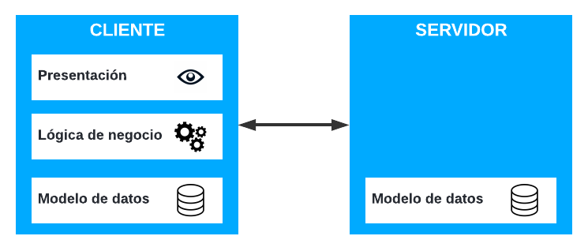 | 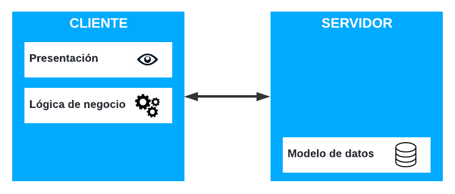 |
|---|---|
| Sistemas de datos distribuidos (cliente pesado) Ejemplo: Gestión de una empresa con varias sucursales. | Sistemas remoto de gestion de datos (cliente pesado) Ejemplo: Cliente de una base de datos. |
Arquitectura de tuberías y filtros (pipes and filters)
Modelan sistemas cuyos componentes principales son nodos especializados en aceptar datos de entrada, procesarlos y producir unos resultados con ellos.
Estos nodos (filtros) se conectan entre sí por algún mecanismo de comunicación (tuberías), de manera que la representación de la arquitectura tiene forma de grafo dirigido.
Los nodos son independientes entre sí, promoviendo la reutilización.
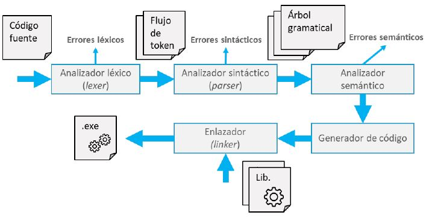
Arquitectura multicapa
El sistema es descompuesto en diferentes capas, de manera que cada una de llas se especializa en un conjunto de responsabilidades.
Cada capa solo conoce a las adyacentes y ofrece servicios a la superior.
Soporta el enfoque de modelo incremental de sistemas, comenzando por el desarrollo de las capas inferiores y continuando por las superiores.
Ejemplo: Arquitectura multicapa iOS.
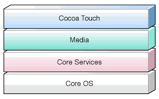
Arquitectura de repositorio
Están orientadas a sistemas que tiene que trabajar con grandes cantidades de información compartida entre varios subsistemas.
Generalmente existen componentes generadores de datos y otros que los consumen, de manera que los datos quedan almacenados en un repositorio común.
Ejemplo: Arquitectura de repositorio para un sistema de gestión hospitalaría.

Arquitecturas tolerantes a fallos
La confiabilidad de un sistema es una propiedad que tiene en cuenta la protección, la fiabilidad, la disponibilidad , la seguridad y otros atributos del sistema. Refleja el grado en que los usuarios pueden confiar en un sistema.
Las arquitecturas tolerantes a fallos son útiles para sistemas críticos.
Los sistemas críticos son aquellos cuyo mal funcionamiento puede dañar a las personas, el entorno o el equipamiento.
Ejemplo:
- Sistemas médicos.
- Sistemas de control de vuelo.
- ...
Sistemas de protección
Es un sistema que se encarga de monitorizar el correcto funcionamiento de otro sistema en paralelo.
- Monitoriza el estado del entorno a través de sensores independientes.
- Monitoriza el funcionamiento del proceso.
Si detecta desviaciones del comportamiento esperado tiene prioridad para tomar acciones correctoras.
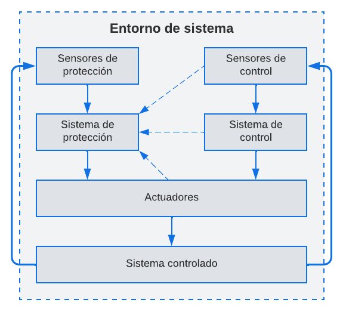
Programación de varias versiones:
Se desarrollan diferentes versiones del mismo sistema que se ejecutan en dispositivos diferentes e independientes.
Las salidas que generan los diferentes sistemas se comparan en un sistema de votación, rechazando aquellas salidas que son inconsistentes o que no se producen a tiempo.
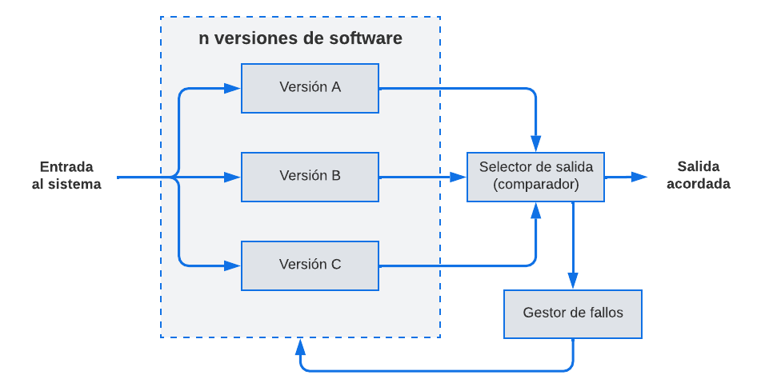
Arquitectura de sistemas distribuidos
Son computadores independientes que se muestran al usuario como un solo sistema.
Ventajas:
- Compartición de recursos.
- Empleo de protocolos estandarizados.
- Concurrencia y paralelización.
- Escalabilidad para adaptarse a la demanda.
- Tolerancia a fallos al facilitar la redundancia.
Arquitectura maestro-esclavo
Utilizada en sistemas con restricciones en tiempo real, en los que el cómputo se distribuye a diferentes nodos de procesamiento.
Puede haber diferentes nodos especializados, pero es habitual la presencia de un nodo maestro, que es el responsable de coordinar al resto.
Se trata de una arquitectura centralizada en la que el maestro toma la forma de cliente-servidor, actuando como cliente frente a unos procesos y sirve información a otros procesos.
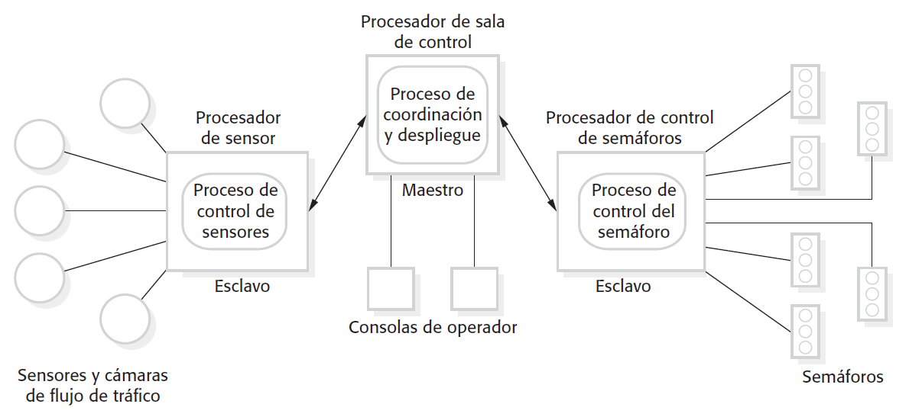
Arquitecturas cliente–servidor de varios niveles
El modelo cliente-servidor predomina en sistemas distribuidos.
Las arquitecturas cliente-servidor de varios niveles distribuyen los diferentes servidores, con capacidades específicas, en diferentes niveles físicos.
| - Sistemas heredados donde no es posible separar la lógica de negocio de la gestión de datos. - Aplicaciones de cómputo intensivo con poca gestión de datos. - Aplicaciones intensivas en datos con poco procesamiento. |
|
| - El procesamiento lo realiza software comercial en el cliente. - Se requiere procesamiento intensivo en el cliente. - No se garantiza la conexión a la red, y puede ser necesario realizar procesamiento en el cliente con datos almacenados en caché. |
|
| - Aplicaciones muy grandes con miles de usuarios. - Aplicaciones que manejan datos de múltiples fuentes. |
|
Arquitectura de componentes distribuidos
La arquitectura cliente servidor multinivel puede plantear problemas de escalabilidad al no saber qué servicios incluir en cada capa.
La alternativa consiste en diseñar el sistema como un conjunto de servicios comunicados a través de un middleware.
Ejemplo: Partiendo del ejemplo anterior de cliente-servidor con dos capas en cada uno de los servidores, ahora se ha dejado una capa y se ha dividido en dos niveles.

Beneficios
- Se simplifica el diseño.
- Aumenta la flexibilidad en las modificaciones.
Desventajas
- Puede resultar más complejo comprender el sistema.
- No existen middleware estandarizados.
Arquitectura P2P (peer-to-peer)
Las arquitecturas P2P, o entre pares, contienen varios sistemas que se intercomunican entre sí en condiciones de igualdad.
Todos los elementos del modelo son homogéneos, ofreciendo las mismas interfaces y servicios.
Dicho de otro modo, todos los nodos son simultáneamente clientes y servidores para el resto, y las interfaces son idénticas.
Arquitectura P2P descentralizada
En esta arquitectura, cada nodo solo puede solicitar búsquedas a sus adyacentes y una vez encontrado lo que se buscaba, se establece la comunicación directa entre los nodos.
Ejemplo: El nodo 1 solicita un documento que solo está disponible en el nodo 8. La búsqueda debe propagarse por los nodos 3, 5, 6, 7, y 9 hasta que el documento es hallado en el nodo 8. En este momento, el Nodo 8 ya puede establecer una conexión directa punto a punto con el Nodo 1 y enviarle el documento.
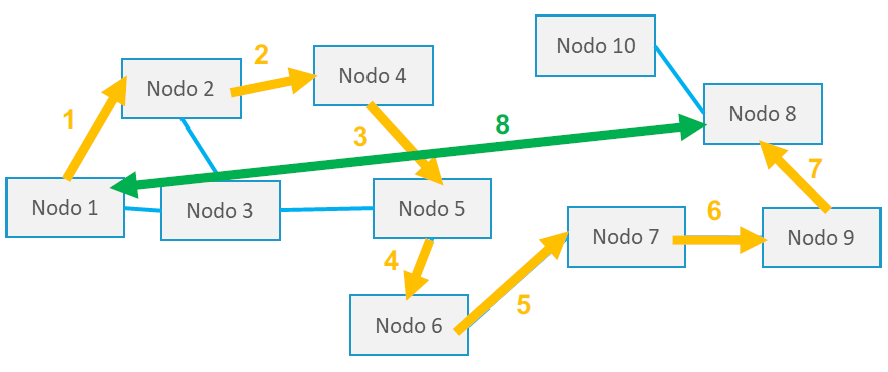
Arquitectura P2P semicentralizada
Consiste, en que dentro de la red, algunos nodos actúan como servidores para el resto, actuando como centralitas para el resto de nodos y permitiéndoles descubrir cuales disponen de la información. Reduciendo así el volumen de tráfico.
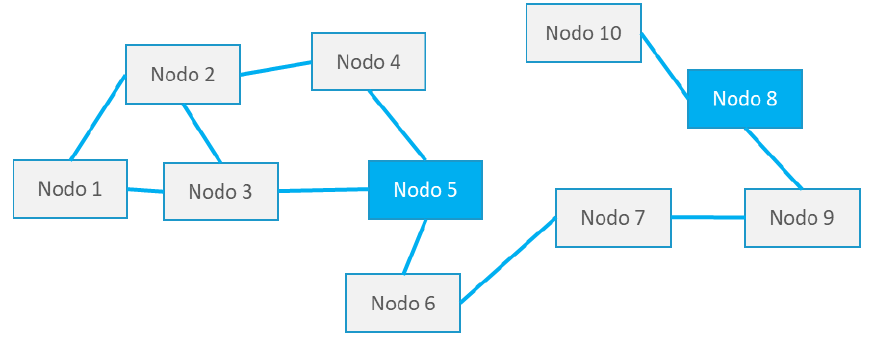